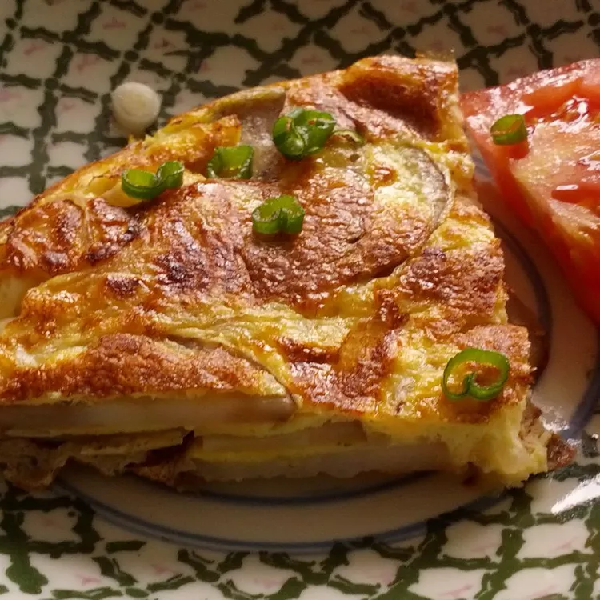

Spanish omelet

Description
I'm Spanish. This is not how's made and I regret writing this. But it's another way to do it (worse), and I'll show you.
Enjoy! (original recipe)
Ingredients
- ½ cup olive oil
- ½ pound potatoes, thinly sliced
- salt and pepper to taste
- 1 large onion, thinly sliced
- 4 large eggs
- 2 medium tomatoes - peeled, seeded, and coarsely chopped
- 2 green onions, chopped
Steps
- Heat oil over medium-high heat in a large skillet. Add potatoes and season lightly with salt and pepper; cook, stirring occasionally, until golden brown and crisp, 10 to 14 minutes. Add onions; cook and stir until soft and beginning to brown, 6 to 8 minutes.
- Whisk eggs in a bowl; season with salt and pepper. Pour eggs into the skillet and stir gently to combine with potatoes and onion. Reduce the heat to low and cook until eggs begin to brown on the bottom, 4 to 5 minutes.
- Loosen omelet with a spatula. Invert a large plate over the pan, and carefully flip omelet out onto the plate. Slide omelet, uncooked-side down, back into the pan. Cook until eggs are set, 4 to 5 minutes.
- Serve warm, garnished with tomato and green onion.
HOME PAGE